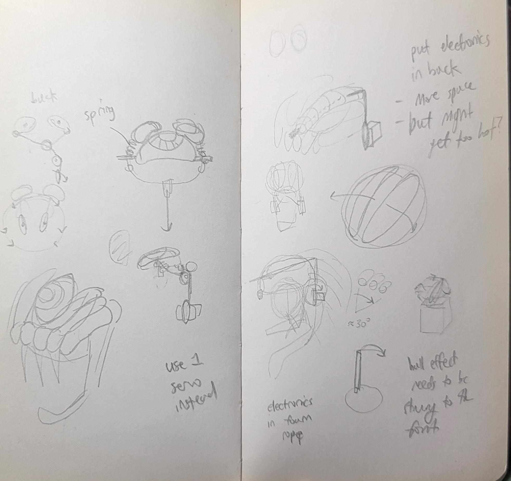
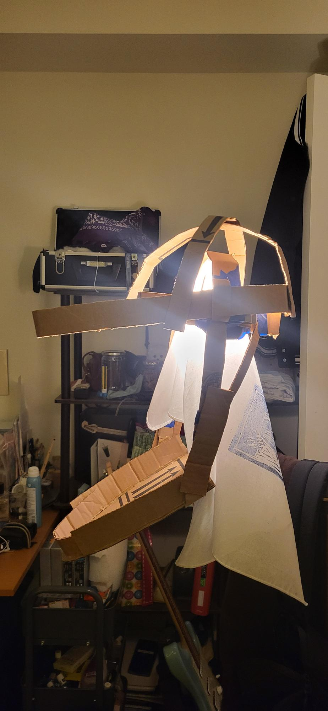
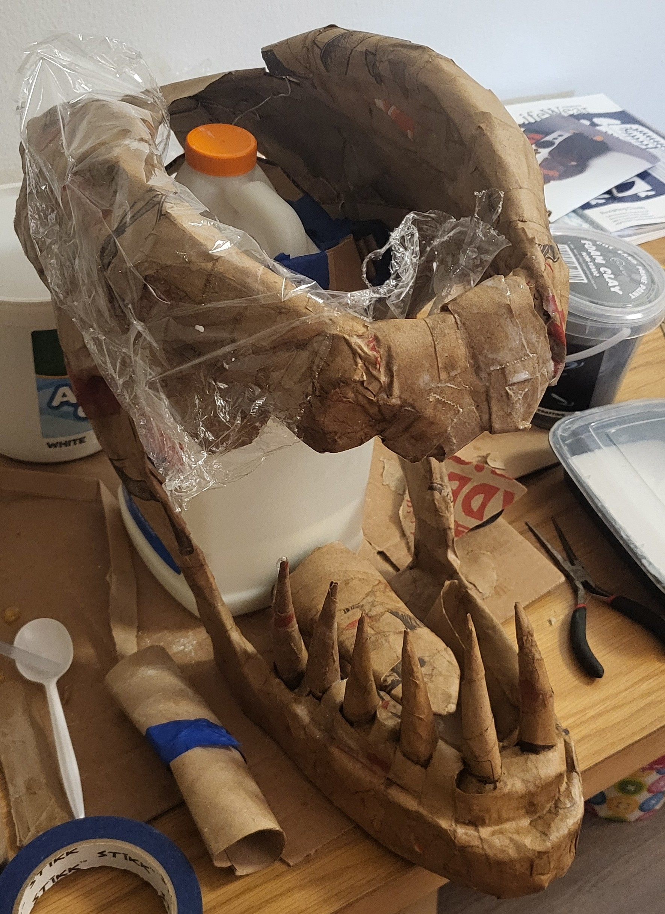
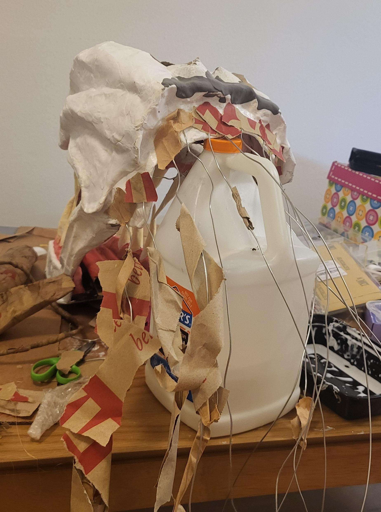
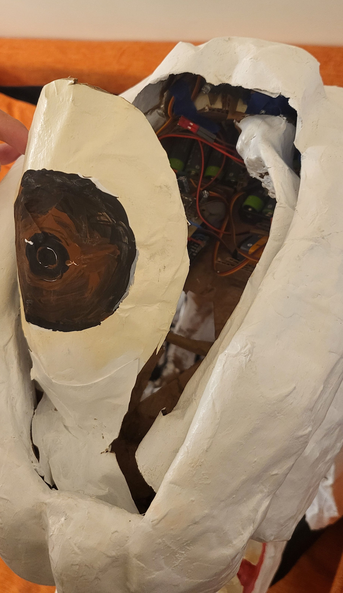
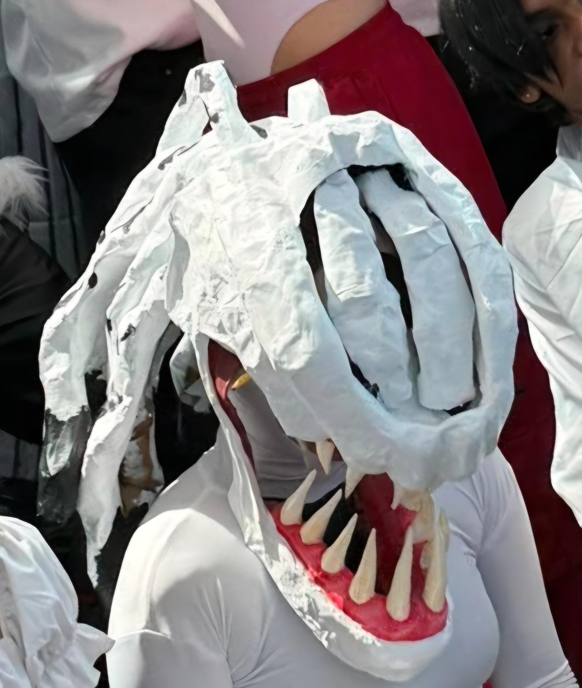

Rikka Cosplay Head
Overview
Designing and fabriating this cosplay head was a personal project I took on out of my own interest to combine mechanical engineering and art. The goal was to build a wearable cosplay head for Anime NYC (an anime convention) using inexpensive materials, including aluminum wire, cardboard, cardboard tubes, hot glue, Trader Joe's paper bags, and paint. Most of these materials I already had on-hand, with the only item I needed to purchase being the paint. Rather than using a 3D printer to create the entire form, I wanted to experiement with different techniques to achieve the desired aesthetic, ultimately teaching myself paper mâché to create the outer structure. I also gained more experience in basic electronics, practicing arduino programming and soldering for the mechanism to close and open the eye lides on the top of the head. This project allowed me to strengthen my skills in hands-on fabrication, creative problem-solving, and iterative design while exploring the intersection of engineering and artistic expression.

Initial Sketches
I first put pen to paper and roughly brainstormed how I wanted to create the cosplay head. Originally I inteded to use pool noodles or foam rope to create the hair like portion of the head, but realized that these materials would be too expensive. Additionally, for the eye mechanism, I initially thought of a pulley system, where a servo motor would rotate to pull on a string connected to the eyelids, pulling them open, and then a spring would push the eyelids back into place as the servo motor rotated back. As I built the structure, I realized only the hollow section in the top of the head under the eye would have space for all the electronics, so I redesigned the mechanism to fit within the limited space. The servo motors would instead be directly mounted to the eyelids to open and close them.

Base Structure for the Head
The earliest form of the head is built off a simple cardboard base, made from repurposed cardboard boxes and painters tape to hold the basic form together.

Progression of Structure
Paper maché, cardboard, and hot glue was used to build upon the base structure, gradually adding layers and details to build up the form.

Back of the Head Progression
The hair-like portion of the head started with aluminum wire, which was then covered with paper maché and clay foam to create the desired texture and shape.
Eyelid Circuitry
The video demonstrates the circuitry and mechanism for the eyelid movement. The system uses a hall-effect sensor which is triggered by a magnet. When the sensor is triggered, the ardunio tells the motors to rotate a specific angle, causing the eyelid to open then close. The program has a "cool down" period to prevent the motors from being triggered while it has already been triggered.

Electronics in the Head
The image shows the eyelid electronics inside of the top of the head. The electronics are under the eye, which is made from cardboard and painted over. The eyelids made in the same fashion, and directly attached to the servo motors. Unfortunately one eyelid was lost during the convention.

Wearing the Head
The image pictures me actually wearing the head during the convention. Both eyelids can be pictured, but unfortunately I was unable to get a video of the eyelids opening and closing while wearing the head.